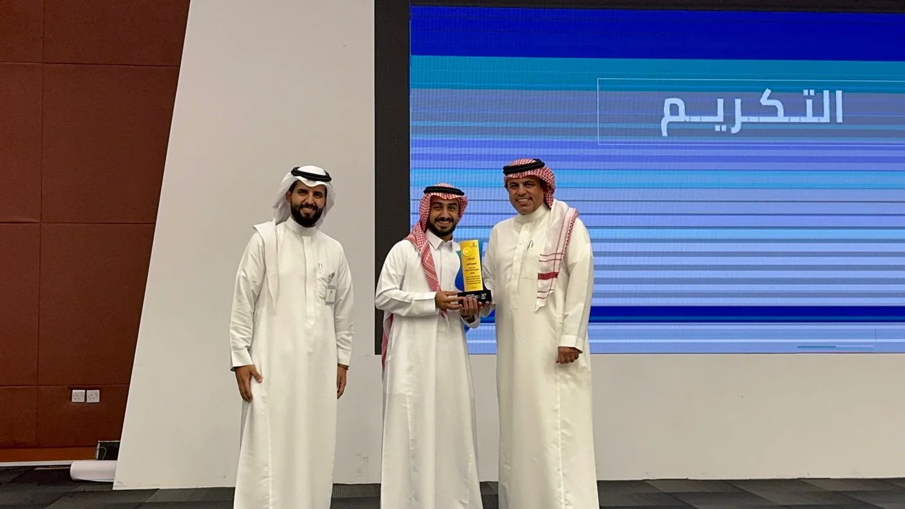
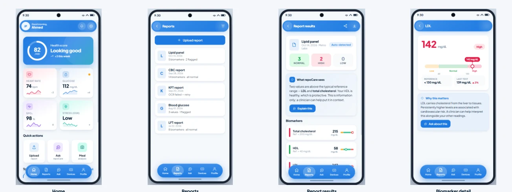

The problem
Lab results often arrive in separate PDFs, with unfamiliar terms and units. That makes it hard to understand a result in context or compare it with a previous report.
Graduation project · Health technology
A clearer way to read lab reports.
RepoCare extracts biomarker values from medical reports and turns them into a timeline of results people can read and revisit.

Lab results often arrive in separate PDFs, with unfamiliar terms and units. That makes it hard to understand a result in context or compare it with a previous report.
I implemented the Spring Boot AI provider and its Anthropic integration, including configuration, retries, error handling, and token tracking. I also worked on the meal-analysis flow, which gives users feedback from a photo of a meal.
Report uploads become structured biomarker results with units, status, and a timeline. The interface surfaces the result first and lets the user open the explanation when they need it. Aware was the earlier Android iteration of this work.
